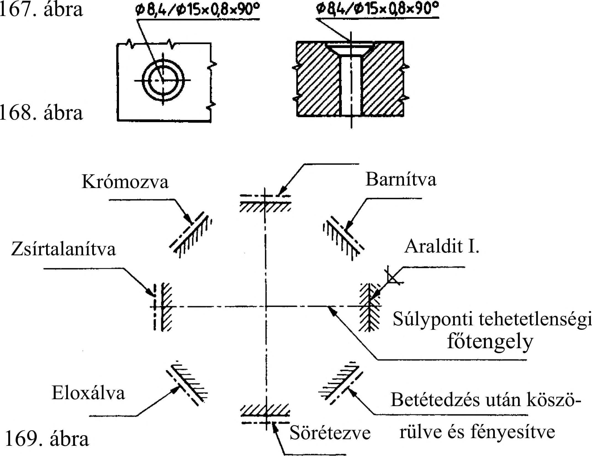

8. Mérethálózat 8.3. Furatok egyszerűsített méretmegadása Zsúfolt vagy kis méretarányú rajzokon, ha a furatok eddig ismert méretmegadása az áttekinthetőséget nehezíti, megengedett a furatok egyszerűsített méretmegadása. A furatméretet a furattengelytől kiinduló mutatóvonalon kell megadni. Az első szám a furat átmérője, a második szám a furat mélységére vonatkozik (166. ábra). Atmenőlyuknak csak az átmérőjét írjuk elő. Ezért ha a méretmegadás csak a lyuk átmérőjét tartalmazza, akkor a lyuk átmenőnek tekintendő. A hengeresen vagy kúposán süllyesztett furatok egyszerűsített méretmegadásakor a mutatóvonalat a süllyesztés oldalán kell megadni. Az első szám az alapfúrat átmérőjét, a második a süllyesztés átmérőjét, a harmadik a süllyesztés mértékét vagy a kúpos süllyesztés központi szögét jelenti (167. ábra). Ha a süllyesztés mértéke és a kúpszög megadása egyaránt szükséges, akkor a süllyesztés mértékét követi a kúpszög megadása (168. ábra). 166. ábra 08x15 05 x7 07x10 010/016x60° 06/012x90° 8.4. A felületkikészítés és a hőkezelés rajzi megadása Ha az alkatrész valamilyen különleges állapotát is jelölni kell, pl. a felületkikészítés területét vagy a hőkezelés helyét kell mérettel megadni, akkor azt a területet vagy a helyet a felülettől kis távolságra és azzal párhuzamosan rajzolt vastag pontvonallal kell jelölni (169. ábra). A felületkikészítés módját nyílban végződő mutató vonalon adjuk meg. A szöveges utasítás mindig az alkatrész kész állapotát fejezi ki (pl. "Sörétezve"). Ha szükséges, a felületkikészítés helyét mérettel kell meghatározni (170. ábra). Ha a helymeghatározás forgásfelületre vonatkozik, akkor a jelölést elegendő csak az egyik oldalon megadni (171. ábra). Hőkezelendő termék rajzán fel kell tüntetni a termék hőkezelés utáni tulajdonságait (pl. keménységét). A kezelés felületmélységét h betűvel kell jelölni (172. ábra). Pl. h 0,7.. .0,9 mm; 40.. .44 HRC; vagy h 0,8... 1 mm; 42+2 HRC. Ha a munkadarab csak egy részére vonatkozik a hőkezelési utasítás, akkor ezt jelölni kell (173. ábra). A működő felületek épségének megóvása érdekében a keménységmérés helyét szöveggel jelöljük meg (174. ábra). Sörétezve Krómozva 170. ábra 172. ábra 171. ábra h 0,8.. lmm 42±2HRC 21 Megereszteni 42.. 45 HRC 173. ábra 174. ábra 43
